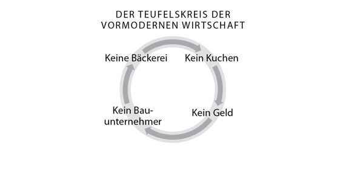
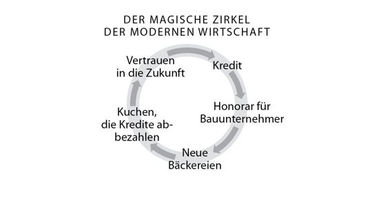
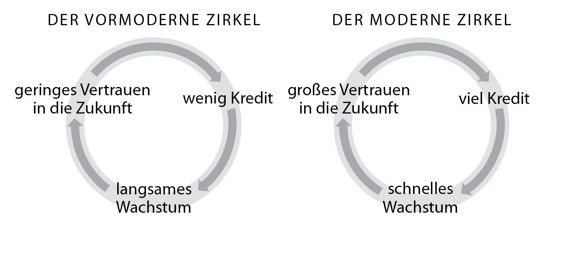
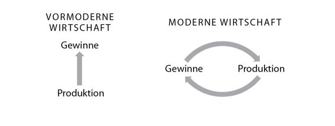

Kapitel 16
Die Religion des Kapitalismus
Versuchen Sie mal, ohne Geld Wissenschaft zu betreiben oder ein Imperium zu erobern. Andererseits, warum sollte man das überhaupt wollen, wenn kein Gewinn dabei herausspringt? Geld ist untrennbar mit der wissenschaftlichen Revolution verbunden. Aber ist Geld das Ziel oder nur ein gefährliches Mittel auf dem Weg dorthin?
Geld ist ein launischer Freund. Es hat Staaten gegründet und in den Ruin gestürzt, neue Horizonte eröffnet und Millionen versklavt, das Räderwerk der Industrie angetrieben und Tausende Arten ausgerottet. So komplex die Geschichte der moderne Wirtschaft ist, sie lässt sich mit einem einzigen Wort zusammenfassen: Wachstum. Ob es uns gefällt oder nicht, in den letzten 500 Jahren ist die Wirtschaft so rasant gewachsen wie der hormongeflutete Körper eines Jugendlichen. Mit ihrem unersättlichen Appetit verschlingt sie alles, was sie greifen kann, und wächst mit atemberaubenden Tempo.
Über Jahrtausende hinweg befand sich die Wirtschaft im Stillstand. Natürlich wuchs die weltweite Produktion allmählich, aber das lag am Bevölkerungswachstum und an der Besiedlung neuer Gebiete. Die Pro-Kopf-Produktion blieb dagegen weitgehend gleich. In der Neuzeit änderte sich dies dramatisch. Im Jahr 1500 wurden weltweit Güter und Dienstleistungen im Wert von umgerechnet rund 250 Milliarden Dollar produziert. Heute sind es etwa 60 Billionen Dollar. Interessanter ist jedoch, dass im Jahr 1500 die Produktion pro Kopf umgerechnet bei durchschnittlich 550 Dollar lag, während heute jeder Mann, jede Frau und jedes Kind pro Jahr durchschnittlich Waren und Dienstleistungen im Wert von 8800 Dollar produziert.95 Wie lässt sich dieses erstaunliche Wachstum erklären?
Die Wirtschaft ist berüchtigt für ihre Kompliziertheit. Um die Sache zu vereinfachen, nehmen wir ein hypothetisches Beispiel:
Herr Taler gründet eine Bank.
Der Bauunternehmer Maurer hat gerade ein großes Projekt abgeschlossen und 1 Million Euro kassiert, die er auf die neue Bank bringt. Nun hat die Bank ein Kapital von 1 Million.
Frau Back träumt davon, eine Großbäckerei zu eröffnen. Leider fehlt ihr das nötige Kleingeld. Also geht sie zur Bank, erzählt Herrn Taler von ihrem Traum und geht mit einem Kredit von 1 Million nach Hause.
Frau Back beauftragt Herrn Maurer, ihr für den stolzen Preis von 1 Million eine Großbäckerei zu bauen, und zahlt im Voraus.
Herr Maurer nimmt die Million und trägt sie auf die Bank.
Wie viel Geld hat Herr Maurer jetzt auf dem Konto?
2 Millionen.
Und wie viel Geld befindet sich wirklich in der Bank?
1 Million.
Doch damit ist die Geschichte noch nicht zu Ende. Wie es in solchen Fällen eben so geht, informiert Herr Maurer seine Kundin Frau Back, dass sich unvorhergesehene Schwierigkeiten ergeben haben und der Bau nun 2 Millionen kostet. Aber Frau Back lässt sich nicht aus der Ruhe bringen. Sie geht noch einmal zur Bank, überzeugt Herrn Taler, ihr einen weiteren Kredit zu geben und geht mit einer weiteren Million in der Tasche nach Hause. Dieses Geld gibt sie Herrn Maurer, der es auf sein Konto einzahlt.
Wie viel Geld hat Herr Maurer jetzt auf seinem Konto?
3 Millionen.
Und wie viel Geld befindet sich wirklich in der Bank?
Immer noch nur 1 Million. Und zwar dieselbe Million, die von Anfang an auf der Bank lag.
Nach den Gesetzen des modernen Bankwesens lässt sich dieses Spiel noch sieben Mal wiederholen: Dann hätte Herr Maurer 10 Millionen auf seinem Konto, während die Bank nur eine Million im Tresor hat. Für jeden Euro, den eine Bank besitzt, darf sie zehn verleihen, was umgekehrt bedeutet, dass 90 Prozent des Geldes auf unseren Konten nicht durch »echtes Geld« gedeckt ist.96 Wenn alle Kunden von Herrn Talers Bank plötzlich das Geld von ihren Konten abheben wollen, bricht sie zusammen. Und dasselbe gilt für Barclays, Lloyds, die Deutsche Bank, die Citibank und jede andere Bank der Welt.
Ist das Ganze also ein riesiges Schneeballsystem und ein riesiger Schwindel? Wenn ja, dann ist die gesamte moderne Wirtschaft ein Schwindel. Aber Jahrhunderte des realen Wirtschaftswachstums lassen vermuten, dass es sich nicht um einen Betrug handelt, sondern um eine Meisterleistung der menschlichen Fantasie. Banken und damit die ganze Wirtschaft funktionieren nur, weil wir Vertrauen in die Zukunft haben. Der Wert unseres Geldes ist fast ausschließlich durch dieses Vertrauen gedeckt.
Im unserem Fall wird die Differenz zwischen dem Kontoauszug von Herrn Maurer und der Summe im Tresor der Bank durch die Bäckerei gedeckt, die bislang nur in der Fantasie der Beteiligten existiert und eines Tages Wirklichkeit werden könnte. Sowohl Frau Back als auch Herr Taler stellen sich vor, dass die Bäckerei in etwa einem Jahr ihren Betrieb aufnimmt und dann täglich Tausende Brote, Brötchen, Torten und Kuchen backt. Der Gewinn aus den Verkäufen deckt die Differenz, denn mit ihm kann Frau Back ihren Kredit zurückzahlen und Herr Maurer seine Ersparnisse abheben. Aber diese Backwaren sind bislang ein reines Fantasieprodukt. Die Bäckerei lässt sich nur mit dem Vertrauen errichten, das Frau Back und Herr Taler in ihre Fantasie und Herr Maurer in die Bank haben.
Wir haben schon gesehen, dass Geld eine erstaunliche Erfindung ist, weil es die unterschiedlichsten Dinge repräsentieren kann und alles in fast alles verwandeln kann. Doch vor Beginn der Neuzeit waren dem Geld Fesseln angelegt. Es konnte nämlich nur Dinge repräsentieren oder verwandeln, die im Hier und Jetzt existierten. Dadurch war das Wachstum erheblich eingeschränkt, denn das erschwerte die Finanzierung neuer Unternehmungen.
Nehmen wir unsere Bäckerei. Was wäre passiert, wenn das Geld nur Dinge repräsentieren kann, die tatsächlich existieren? Die Bäckerei wäre nie gegründet worden. Frau Back hat zwar eine Menge Ideen im Kopf, aber sie kann nichts Handfestes vorweisen. Wenn sie einen Bauunternehmer findet, der bereit ist, mit seiner Arbeit in Vorlage zu treten und sich in ein paar Jahren bezahlen zu lassen, dann ist alles schön und gut. Doch solche Leute sind rar. Damit hat Frau Back ein Problem: Sie hat ja noch keine Bäckerei und deswegen auch keine Kuchen. Kein Kuchen, kein Geld. Kein Geld, kein Bauunternehmer. Kein Bauunternehmer, keine Bäckerei.

In diesem Stillstand war die Menschheit über Jahrtausende hinweg gefangen. Erst in der Neuzeit befreite sie sich aus dieser Falle, als ein neues System aufkam, das auf Vertrauen in die Zukunft aufgebaut war. In diesem neuen System kamen die Menschen überein, imaginäre Güter (also solche, die es im Hier und Jetzt noch nicht gab) durch eine besondere Art von Geld zu repräsentieren, die sie »Kredit« nannten. Dieser Kredit erlaubt uns, die Gegenwart auf Kosten der Zukunft zu erschaffen. Kredit basiert auf dem Gedanken, dass wir in Zukunft mehr Ressourcen zur Verfügung haben werden als in der Gegenwart. Wenn wir heute Dinge aufbauen und mit dem Einkommen von morgen bezahlen können, dann eröffnen sich ungeahnte Möglichkeiten.

Wenn der Kredit so eine wunderbare Sache ist, warum kam die Menschheit dann nicht früher auf diesen Gedanken? Natürlich tat sie das. Schon die alten Sumerer verliehen Geld. Das Problem war nur, dass niemand ausreichendes Vertrauen in die Zukunft hatte, um größere Kredite zu vergeben. Die meisten Menschen waren überzeugt, die Geschichte trete auf der Stelle oder schlimmer noch, es ginge immer weiter bergab. In wirtschaftliche Begriffe übersetzt glaubten sie also, dass die Gesamtsumme des Wohlstands begrenzt war und vielleicht sogar immer kleiner wurde – dass die Wirtschaft wachsen würde, konnten sie sich nicht vorstellen. Nur wenige hatten das Vertrauen, dass sie, ihr Land oder die ganze Welt in zehn Jahren mehr produzieren könnte als heute. Die Wirtschaft war also ein Nullsummenspiel. Wenn eine Bäckerei größere Gewinne erzielte, dann nur auf Kosten einer anderen Bäckerei. Venedig könnte zwar einen Boom erleben, aber nur, weil es mit Genua gleichzeitig bergab ging. Der König von England könnte zwar reicher werden, aber nur auf Kosten des Königs von Frankreich. Die Wirtschaft war wie ein Kuchen, der nie größer wurde. Man konnte ihn zwar in verschieden große Stücke schneiden, aber es war immer derselbe Kuchen.
Das war auch der Grund, warum Reichtum in vielen Kulturen als Sünde galt. Oder wie Jesus sagte: »Eher geht ein Kamel durch ein Nadelöhr, als dass ein Reicher in das Reich Gottes gelangt.« (Matthäus 19,24) Wenn der Kuchen immer gleich groß ist, und ich mir ein großes Stück herausschneide, dann muss ich mir etwas genehmigt haben, das anderen zusteht. Deshalb mussten die Reichen Buße tun und einen kleinen Teil ihres Reichtums den Armen spenden.
Und da der Kuchen nicht größer wurde, gab es kaum Kredit. Kredit ist nämlich die Differenz zwischen dem Kuchen von heute und dem Kuchen von morgen. Wenn der Kuchen nicht größer wird, warum sollte man dann Kredite vergeben? Wenn man einem Bäcker oder König Geld lieh, musste man schon hoffen, dass sie jemand anderem ein Stück abzwackten. Daher vergab kaum jemand Kredite, und wenn, dann nur kurzfristig kleine Summen zu horrenden Zinsen. Unter diesen Umständen hätte Frau Back ihre Bäckerei nie eröffnet, und Könige konnten ihre Paläste oder Kriege nur finanzieren, indem sie neue Steuern erhoben.
Es war eine Situation, in der alle nur verlieren konnten. Da es kaum Kredit gab, wurden kaum Unternehmen gegründet. Und ohne neue Unternehmen dümpelte die Wirtschaft vor sich hin. Da die Wirtschaft nicht wuchs, nahmen alle an, dass sie nie wachsen würde, und wer Geld hatte, verspürte wenig Lust, es zu verleihen. Die Erwartung der Stagnation erfüllte sich selbst.
Ein Kuchen, der immer größer wird
Dann kam die wissenschaftliche Revolution und mit ihr der Fortschrittsgedanke. Letzterer basiert auf der Vorstellung, dass wir unsere Situation verbessern können, wenn wir unsere Unwissenheit eingestehen und Ressourcen in Forschung investieren. Dieser Gedanke wurde bald von der Wirtschaft aufgegriffen. Wer an Fortschritt glaubt, ist überzeugt, dass sich die Gesamtsumme der menschlichen Produktion, des Handels und des Wohlstands mit Hilfe von Entdeckungen, Erfindungen und Verbesserungen vergrößern lässt. Wir können neue Handelsrouten im Atlantik aufbauen, ohne die Profite der alten Handelsrouten im Indischen Ozean zu schmälern. Wir können neue Güter produzieren, ohne die Produktion der alten zu beeinträchtigen. Wir könnten eine Bäckerei eröffnen, die sich auf Sachertorte und Croissants spezialisiert, ohne dass deshalb die Vollkornbäcker pleitegehen. Jeder entwickelt einen anderen Geschmack und isst einfach mehr. Ich kann reich werden, ohne dass Sie deshalb arm werden; ich kann Übergewicht haben, ohne dass Sie verhungern. Der globale Kuchen kann einfach größer werden.
In den vergangenen fünf Jahrhunderten haben wir unter dem Eindruck des Fortschrittsgedankens immer mehr Vertrauen in die Zukunft investiert. Dieses Vertrauen stellte Kredite bereit, die Kredite kauften reales Wirtschaftswachstum, das Wirtschaftswachstum stärkte das Vertrauen in die Zukunft und bereitete den Boden für neue Kredite. Das passierte natürlich nicht über Nacht, und der Weg dorthin glich gelegentlich einer Achterbahnfahrt. Aber aus der Perspektive eines Satelliten in der Erdumlaufbahn ist der Trend eindeutig. Heute steht so viel Kredit zur Verfügung, dass Regierungen, Unternehmen und Privatpersonen problemlos langfristig und zu niedrigen Zinsen große Summen aufnehmen können, die ihr gegenwärtiges Einkommen weit übersteigen.

Dieser Glaube an den immer größer werdenden Kuchen entwickelte eine gewaltige Sprengkraft. Im Jahr 1776 veröffentlichte der schottische Philosoph Adam Smith sein Buch Wohlstand der Nationen, das vielleicht wichtigste wirtschaftliche Manifest aller Zeiten. In den acht Kapiteln des ersten Bandes entwickelte Smith folgenden neuen Gedankengang: Wenn ein Landbesitzer, Weber oder Schuhmacher größere Gewinne erwirtschaftet, als er zum Unterhalt seiner Familie benötigt, dann nutzt er diesen Überschuss, um mehr Mitarbeiter zu beschäftigen und seine Gewinne weiter zu steigern. Je mehr Gewinne er erwirtschaftet, umso mehr Mitarbeiter beschäftigt er. Daraus folgt, dass die Gewinnsteigerung von Unternehmern die Grundlage für den kollektiven Wohlstand ist.
Wenn Sie das nicht sonderlich originell finden, dann liegt das daran, dass wir in einer kapitalistischen Gesellschaft leben, die Smiths Gedanken längst verinnerlicht hat. Variationen dieser Idee hören wir in jeder Nachrichtensendung. Doch Smiths Argument, dass das private Gewinnstreben zu kollektivem Wohlstand führt, ist einer der revolutionärsten Gedanken der Menschheitsgeschichte. Revolutionär nicht nur in wirtschaftlicher, sondern auch in moralischer und politischer Hinsicht. Mit anderen Worten behauptet Smith nämlich, Gier sei gut, und wenn ich reicher werde, nutze ich damit nicht nur mir selbst, sondern allen. Egoismus ist Altruismus.
Smith brachte den Menschen bei, die Wirtschaft als Win-Win-Situation zu verstehen, in der ein Gewinn für mich auch ein Gewinn für Sie ist. Wir können nicht nur beide ein größeres Stück vom Kuchen abbekommen – Ihr Stück wird nur größer, wenn meines auch größer wird. Wenn ich arm bin, bleiben Sie auch arm, weil ich mir Ihre Produkte oder Dienstleistungen nicht leisten kann. Und wenn ich reich bin, geht es auch Ihnen besser, weil Sie mir jetzt etwas verkaufen können. Smith leugnete den traditionellen Gegensatz zwischen Reichtum und Moral und stieß den Reichen das Tor zum Himmelreich weit auf. Reich zu sein bedeutet, ein moralischer Mensch zu sein. Wenn man Smith glaubt, werden die Reichen nicht deshalb reich, weil sie ihren Nachbarn über den Tisch ziehen, sondern weil sie den Kuchen größer machen. Und wenn der Kuchen größer wird, haben alles etwas davon. Die Reichen sind folglich die größten Wohltäter einer Gesellschaft, denn sie sind der Motor des Wachstums, von dem alle profitieren.
Das hängt allerdings davon ab, dass die Reichen ihre Gewinne nicht verprassen, sondern zum Bau neuer Fabriken und zur Schaffung neuer Arbeitsplätze verwenden. Smith wiederholte daher gebetsmühlenartig sein Motto »wenn seine Gewinne steigen, beschäftigt der Weber mehr Mitarbeiter« und nicht etwa »wenn seine Gewinne steigen, feiert der Weber ein rauschendes Fest«. Ein entscheidender Faktor der modernen kapitalistischen Wirtschaft ist die Geburt einer neuen Ethik, nach der Gewinne wieder in die Produktion gesteckt werden. Eine Fabrik erzielt Gewinne, diese Gewinne werden in die Fabrik zurück investiert, was wiederum für neue Gewinne sorgt, die erneut in die Fabrik gesteckt werden, was die Gewinne weiter steigen lässt, und so weiter bis zum jüngsten Tag. Die Gewinne lassen sich auf unterschiedliche Weise investieren: in den Ausbau der Fertigungsanlage, in die wissenschaftliche Forschung oder in die Entwicklung neuer Produkte. Doch alle Investitionen müssen in irgendeiner Form zur Produktions- und Gewinnsteigerung beitragen. In der neuen kapitalistischen Religion lautet das erste und wichtigste Gebot: »Du sollst die Gewinne aus der Produktion in die Steigerung der Produktion investieren.«

Deshalb heißt er ja auch »Kapitalismus«. Kapital ist nämlich etwas ganz anderes als bloßer Reichtum. Kapital besteht aus Geld, Gütern und Ressourcen, die in die Produktion investiert werden. Reichtum wird dagegen verbuddelt oder verprasst. Ein Pharao, der seinen Staatsschatz in den Bau einer unproduktiven Pyramide steckt, ist kein Kapitalist. Ein Pirat, der eine spanische Galeone überfällt und eine Kiste voller Goldmünzen am Strand einer Karibikinsel vergräbt, ist kein Kapitalist. Aber ein Hilfsarbeiter einer Fabrik, der einen Teil seines sauer verdienten Lohns in Aktien anlegt, ist ein Kapitalist.
Der Gedanke, dass die Gewinne aus der Produktion in die Steigerung der Produktion investiert werden müssen, mag banal klingen. Trotzdem war er den Menschen lange Zeit fremd. Vor Beginn der Neuzeit glaubten sie, die Produktion sei mehr oder weniger konstant, weshalb es sinnlos war, Gewinne in die Produktion zurück zu investieren: Egal was wir anstellen, die Produktion steigt ohnehin nicht. Daher lebten die mittelalterlichen Adeligen nach einer Ethik der Großzügigkeit und des Geltungskonsums. Sie gaben ihre Einnahmen für Turniere, Bankette, Paläste und Kriege oder für Wohltätigkeiten und den Bau von Kathedralen aus. Nur wenige versuchten, ihre Gewinne zu investieren, um die Erträge ihrer Landgüter zu steigern, bessere Weizensorten zu züchten oder neue Märkte zu erschließen.
Mit Beginn der Neuzeit wurde der Adel von einer neuen Elite abgelöst, deren Angehörige wahre Gläubige der kapitalistischen Religion waren. Diese neue Elite bestand nicht aus Grafen und Baronen, sondern aus Aufsichtsratsvorsitzenden, Aktienhändlern und Industriellen. Diese Magnaten sind reicher als der mittelalterliche Adel, aber anders als ihre verschwenderischen Vorgänger haben sie weniger Interesse daran, ihr Geld zur Schau zu stellen, und verprassen nur einen kleinen Teil ihrer Gewinne.
Die Adeligen des Mittelalters trugen farbenprächtige, mit Silber und Gold bestickte Roben und verbrachten ihre Zeit mit Banketten, Kostümfesten und prunkvollen Turnieren. Moderne Unternehmensvorstände tragen dagegen langweilige Uniformen namens »Anzüge«, in denen sie ungefähr so farbenprächtig aussehen wie ein Krähenschwarm, und haben wenig Zeit für Kostümfeste oder Bankette. Der typische Investor eilt von einem Geschäftstermin zum nächsten, um geeignete Geldanlagen aufzuspüren und das Auf und Ab seiner Aktien zu verfolgen. Er trägt zwar einen Anzug von Versace und reist in einem Privatjet, doch diese Ausgaben sind nichts im Vergleich zu den Summen, die er in die Produktionssteigerung investiert.
Aber nicht nur die Unternehmer in Versace-Anzügen investieren in die Produktion. Selbst relativ arme Menschen halten die Augen nach den besten Investitionen offen und diskutieren beim Abendessen darüber, ob sie ihre wertvollen Ersparnisse lieber in Aktien oder in Immobilien anlegen sollen. Auch Staaten wollen ihre Steuereinnahmen in produktive Unternehmungen stecken, die zusätzliche Einnahmen bringen. Die einen bauen Hafenanlagen, um die Exporte und damit die künftigen Steuereinnahmen zu steigern. Andere investieren in die Bildung, weil gut ausgebildete Bürger produktiver sind und mehr Steuern zahlen, die sich wieder in das Schulsystem investieren lassen.
*
Der Kapitalismus begann als eine Theorie, die das Funktionieren der Wirtschaft erklärte. Doch die Theorie beschrieb nicht nur, sie bot auch eine Anleitung. Und allmählich wurde aus der Theorie auch eine Religion mit eigenen Verhaltensregeln. Der wichtigste Glaubenssatz des Kapitalismus besagt, dass Wirtschaftswachstum das höchste Gut ist, oder dass es zumindest stellvertretend für das höchste Gut steht, denn Gerechtigkeit, Freiheit und sogar Glück hängen vom Wachstum ab. Fragen Sie doch einmal spaßeshalber einen Kapitalisten, wie man Gerechtigkeit und politische Freiheit nach Simbabwe oder Afghanistan bringen kann. Wahrscheinlich bekommen Sie einen Vortrag zu hören, dass Wohlstand und eine prosperierende Mittelschicht die Voraussetzung für stabile demokratische Institutionen sind und dass afghanische Hirten zu Unternehmensgründern werden müssen.
Die neue Religion hatte auch entscheidenden Einfluss auf die Entwicklung der modernen Wissenschaften. In aller Regel wird die Forschung von staatlichen Einrichtungen oder privaten Unternehmen finanziert. Wenn kapitalistische Staaten und Unternehmen erwägen, ob sie ein bestimmtes Forschungsprojekt fördern sollen oder nicht, lautet die erste Frage: »Ermöglicht dieses Projekt die Steigerung der Produktion und der Gewinne? Lässt es die Wirtschaft wachsen?« Kann ein Projekt diese Fragen nicht mit Ja beantworten, hat es kaum Chancen, einen Geldgeber zu finden. Eine Geschichte der modernen Wissenschaften, die den Kapitalismus ausklammert, ist das Papier nicht wert, auf dem sie gedruckt wird.
Umgekehrt lässt sich die Geschichte des modernen Kapitalismus nur verstehen, wenn man die Wissenschaften mit einbezieht. Der Kapitalismus ist der Glaube an das grenzenlose Wachstum der Wirtschaft. Dieser Glaube widerspricht so ziemlich allem, was wir über das Universum wissen. Ein Wolfsrudel würde sich einem fatalen Irrtum hingeben, wenn es glauben würde, dass das Angebot an Schafen immer weiter wächst. Wenn die menschliche Wirtschaft in der Neuzeit trotzdem exponentiell gewachsen ist, dann hat sie das dem Umstand zu verdanken, dass Wissenschaftler alle paar Jahre neue Fortschritte erzielen, Amerika entdecken, die Dampfmaschine entwickeln oder Schafe klonen. Banken und Staaten drucken Geld, aber unterm Strich zahlen die Wissenschaftler die Zeche.
Kolumbus sucht einen Sponsor
Der Kapitalismus spielte nicht nur beim Aufstieg der modernen Wissenschaften eine entscheidende Rolle, sondern auch bei der Expansion des europäischen Imperialismus. Und auf der anderen Seite waren es die europäischen Imperialisten, die das kapitalistische Kreditwesen ins Leben riefen. Natürlich wurde der Kredit nicht in Europa erfunden: Der Kredit ist so alt wie das Geld, und der Aufstieg des Kapitalismus zu Beginn der Neuzeit war eng mit wirtschaftlichen Entwicklungen in Asien verknüpft. Erinnern wir uns daran, dass Asien bis zum Ende des 18. Jahrhunderts das Herz der Weltwirtschaft war und die Europäer sehr viel weniger Kapital zur Verfügung hatten als die Chinesen, Araber oder Inder.
Doch in China, Indien und der islamischen Welt spielten Kredit und Kapitalismus nur eine untergeordnete Rolle. Die Händler und Geldverleiher auf den Märkten von Istanbul, Isfahan, Delhi und Peking mögen zwar auch kapitalistisch gedacht haben, doch die Könige in ihren Palästen und die Generäle in ihren Festungen verachteten sie als Krämerseelen. Die meisten nichteuropäischen Reiche der frühen Neuzeit wurden von großen Eroberern wie Nurhaci und Nader Shah, von bürokratischen und militärischen Eliten der Qing-Dynastie und der Osmanen errichtet. Sie finanzierten ihre Kriege über Steuern und Plünderungen (was letztlich auf dasselbe hinausläuft). Mit Krediten hatten sie wenig am Hut, und um die Interessen der Händler und Investoren scherten sie sich noch weniger.
In Europa machten sich die Könige und Generäle dagegen das kaufmännische Denken zu eigen, bis die Händler und Bankiers schließlich selbst zur herrschenden Elite wurden. Die europäische Eroberung der Welt wurde immer mehr über Kredite und immer weniger über Steuern finanziert, und sie wurde zunehmend von Kapitalisten gelenkt, die vor allem daran interessiert waren, ihre Erträge zu maximieren. Die Imperien der Händler und Bankiers in Frack und Zylinder siegten erstaunlicherweise über die Imperien der Könige und Adeligen in ihren goldenen Roben und glänzenden Rüstungen. Die kaufmännisch geführten Imperien gingen bei der Finanzierung ihrer Eroberungen einfach deutlich geschickter vor. Niemand zahlt gern Steuern, aber alle wollen investieren und Geld verdienen.
Im Jahr 1484 wurde Christoph Kolumbus beim König von Portugal vorstellig und bat ihn, eine Flotte auszustatten, mit der er nach Westen segeln und eine neue Handelsroute nach Ostasien entdecken wollte. Solche Expeditionen waren eine riskante und kostspielige Angelegenheit. Es war viel Geld nötig, um die Schiffe zu bauen, Proviant zu kaufen und die Heuer zu bezahlen. Außerdem konnte niemand garantieren, dass sich die Investition auszahlte. Der König von Portugal lehnte ab.
Wie so mancher Start-up-Gründer von heute gab Kolumbus nicht auf. Er wandte sich an andere potenzielle Investoren in Italien, Frankreich und England und sprach erneut in Portugal vor. Doch überall wurde er abgewiesen. Schließlich versuchte er sein Glück bei Isabella und Ferdinand, den Herrschern des kürzlich vereinigten Spaniens. Unterstützt von erfahrenen Lobbyisten gelang es ihm, Königin Isabella das erforderliche Kapital zu entlocken. Wie heute jedes Schulkind weiß, gewann Isabella den Jackpot. Nach den Entdeckungen von Kolumbus eroberten die Spanier Amerika, entdeckten Gold- und Silbervorkommen und errichteten Zucker- und Tabakpflanzungen, die den spanischen Königen, Bankiers und Händlern mehr Gewinne bescherten, als sie sich je erträumt hätten.
Ein Jahrhundert später waren Fürsten und Bankiers bereit, den Nachfolgern von Kolumbus deutlich mehr Kapital vorzustrecken. Dank der Schätze der Neuen Welt hatten sie viel mehr Geld in den Taschen, das sie verleihen konnten. Vor allem aber hatten die Fürsten und Bankiers mehr Vertrauen in das Potenzial der Expeditionen und waren eher bereit, ihr Geld dafür herauszurücken. Der magische Zirkel des imperialistischen Kapitalismus kam in Gang: Kredite finanzierten neue Entdeckungen, Entdeckungen wurden zu Kolonien, Kolonien erwirtschafteten Gewinne, Gewinne schufen Vertrauen, und Vertrauen war die Grundlage für neue Kredite. Nichteuropäischen Eroberern wie Nurhaci oder Nader Shah ging nach ein paar Tausend Kilometern die Kraft aus. Kapitalistische Unternehmer erhielten dagegen mit jeder Eroberung zusätzlichen finanziellen Schwung.
Da diese Expeditionen alles andere als gefahrlos waren, blieben die Kreditgeber trotzdem vorsichtig. Viele Entdecker kehrten mit leeren Händen nach Europa zurück und fanden nichts, was von Wert gewesen wäre. Die Engländer verschwendeten beispielsweise eine Menge Zeit und Energie auf die erfolglose Suche nach der Nordwestpassage nach Asien, die über die Arktis führen sollte. Viele Expeditionen kehrten nie zurück. Schiffe wurden von Eisbergen gerammt, von tropischen Stürmen versenkt oder von Piraten gekapert. Um den Kreis der potenziellen Investoren zu erweitern und das Risiko zu mindern, erfanden die Europäer Aktiengesellschaften. Nun setzte nicht mehr ein Investor sein ganzes Geld auf ein einziges wurmzerfressenes Schiff, sondern die Aktiengesellschaft sammelte Geld von vielen Anlegern, die nur einen kleinen Teil ihres Kapitals wagten. Damit wurden die Risiken begrenzt, nicht aber die möglichen Gewinne. Wer auf das richtige Schiff setzte, konnte selbst mit einer bescheidenen Investition ein Vermögen machen.
Im Laufe der Jahrzehnte entwickelte sich ein ausgeklügeltes Finanzsystem, mit dessen Hilfe Unternehmen und Regierungen innerhalb kürzester Zeit große Kredite auftreiben konnten. Dieses System war bei der Finanzierung von Eroberungs- und Forschungsexpeditionen deutlich effizienter als jedes Königreich oder Imperium. Die neue Macht des Kredits zeigte sich in der erbitterten Auseinandersetzung zwischen Spanien und den Niederlanden. Im 16. Jahrhundert war Spanien die Vormacht in Europa und herrschte über ein riesiges Weltreich. Dazu gehörten große Teile Europas, Amerikas und der Philippinen, sowie eine ganze Reihe von Stützpunkten entlang der Küsten Afrikas und Asiens. Jahr für Jahr kehrten reich mit Schätzen beladene Flotten aus Amerika und Asien in die Häfen von Sevilla und Cádiz zurück. Die Niederlande waren dagegen nichts als ein kleiner, nebliger Sumpf in einem abgelegenen Winkel des spanischen Weltreichs.
Im Jahr 1568 lehnten sich die Niederländer, die überwiegend Protestanten waren, gegen ihre katholischen Herren in Spanien auf. Zunächst schienen die Rebellen die Rolle von Don Quijote spielen zu wollen, der sich mutig den unbezwingbaren Windmühlen entgegenwirft. Doch acht Jahre später hatten die Niederländer nicht nur ihre Unabhängigkeit erkämpft, sondern sie hatten die Spanier und Portugiesen als Herren der Weltmeere abgelöst und ein Weltreich begründet. Plötzlich waren sie der reichste Staat in ganz Europa.
Das Erfolgsgeheimnis der Niederländer war der Kredit. Die niederländischen Bürger, die keine Lust auf einen Landkrieg hatten, heuerten einfach Söldner an, die für sie gegen die Spanier kämpften. Sie selbst hatten sich in immer größeren Flotten hinaus auf die Weltmeere gewagt. Die Söldner und kanonenstarrenden Schiffe hatten ein Vermögen gekostet, doch die Finanzierung ihrer Heere und Flotten fiel ihnen leichter als dem mächtigen spanischen Weltreich, weil es ihnen gelungen war, das Vertrauen der jungen europäischen Finanzbranche zu gewinnen, während die Spanier es leichtfertig verspielten. Die Bankiers gaben den Niederländern genug Kredit für ihr Abenteuer, und so übernahmen die Niederländer die Kontrolle über die Handelsrouten der Welt, die wiederum ansehnliche Gewinne abwarfen. Mit diesen Gewinnen zahlten die Niederländer ihre Kredite zurück, was wiederum das Vertrauen der Geldgeber bestätigte. Amsterdam wurde schnell zu einem der wichtigsten Häfen Europas und zum Finanzzentrum des Kontinents.
*
Aber wie gewannen die Niederländer das Vertrauen des Finanzwesens? Einerseits, indem sie ihre Kredite pünktlich zurückzahlten und das Risiko der Geldverleiher minderten, und andererseits, indem sie ein unabhängiges Justizsystem einrichteten, das die privaten Rechte schützte – vor allem die Eigentumsrechte. Aus Diktaturen, die Privatpersonen und ihr Eigentum nicht schützen, fließt das Kapital stetig ab und wandert in Staaten, die Recht und Eigentum respektieren.
Stellen Sie sich vor, Sie sind der Sohn einer soliden Augsburger Bankiersfamilie. Ihr Vater will seine Geschäfte ausweiten und Filialen in europäischen Hauptstädten eröffnen. Daher schickt er Sie nach Amsterdam und Ihren jüngeren Bruder nach Madrid. Jedem von Ihnen gibt er 10000 Golddukaten mit, die sie dort investieren sollen. Ihr Bruder verleiht das Geld an den König von Spanien, der eine Armee ausheben will, um gegen Frankreich in den Krieg zu ziehen. Sie entscheiden sich für einen niederländischen Händler, der ein Stück Wildnis auf einer Halbinsel namens Manhattan kaufen will, weil er meint, dass der Wert des Lands steigt, wenn der Handel auf dem Hudson River floriert. Beide Kredite werden in einem Jahr fällig.
Das Jahr vergeht. Der niederländische Händler verkauft sein Land mit einem hübschen Gewinn und zahlt Ihnen den Kredit mit den vereinbarten Zinsen zurück. Ihr Vater ist hocherfreut. Aber Ihr Bruder in Madrid wird nervös. Der spanische König hat zwar den Krieg gegen Frankreich gewonnen, aber inzwischen hat er sich mit den Türken angelegt. Er braucht jeden Heller, um seinen neuen Krieg zu finanzieren, und denkt gar nicht daran, seine Schulden zu bezahlen. Ihr Bruder schreibt ihm Briefe und bietet Freunde mit Beziehungen zum Hof, sich für ihn einzusetzen, doch ohne Erfolg. Ihr Bruder hat nicht nur keine Zinsen eingenommen, er hat sein gesamtes Kapital verloren. Ihr Vater ist alles andere als zufrieden.
Aber damit nicht genug. Der spanische König lässt Ihrem Bruder über den Finanzminister klar machen, dass er einen weiteren Kredit in derselben Höhe erwartet. Aber Ihr Bruder hat kein Geld mehr. Also schreibt er Ihrem Vater, um ihn zu überzeugen, dass der König diesmal sicher zurückzahlen wird. Wenn es um seinen Jüngsten geht, hat der alte Herr ein weiches Herz. Also stimmt er wider besseres Wissen zu. Ein zweites Mal verschwinden 10000 Golddukaten auf Nimmerwiedersehen in der Schatztruhe des Königs. In Amsterdam sehen die Dinge rosiger aus. Sie vergeben immer mehr Kredite an niederländische Händler, die sie prompt und mit Zinsen zurückzahlen. Aber auch Ihnen ist das Glück nicht ewig hold. Einer Ihrer Kunden ist überzeugt, dass Holzpantinen in der nächste Modesaison in Paris der große Renner werden und bittet Sie um einen Kredit, um in der französischen Hauptstadt ein Schuhgeschäft zu eröffnen. Sie leihen ihm das Geld, doch leider interessieren sich die französischen Damen nicht für seine Klompen, und der Händler weigert sich, seinen Kredit zurückzuzahlen.
Ihr Vater tobt und weist Sie und Ihren Bruder an, die Anwälte einzuschalten. Ihr Bruder zieht in Madrid gegen den spanischen König vor Gericht, und Sie verklagen in Amsterdam den gescheiterten Pantoffelhändler. Die spanischen Gerichte unterstehen dem König und die Richter sind sein willfähriges Werkzeug. In den Niederlanden sind die Gerichte dagegen unabhängig. Der spanische Richter lässt die Klage Ihres Bruders gar nicht erst zu, während der niederländische Richter zu Ihren Gunsten entscheidet und das Eigentum des zahlungsunwilligen Schuhschnitzers pfänden lässt. Ihr Vater hat seine Lektion gelernt. Mit niederländischen Unternehmern lassen sich bessere Geschäfte machen als mit dem spanischen König.
Aber damit ist Ihr Bruder noch nicht aus der Klemme. Der König braucht nämlich noch mehr Geld, um seine Feldzüge zu finanzieren. Er ist sich sicher, dass Ihr Vater noch ein bisschen Geld auf der hohen Kante hat. Als der nichts mehr herausrücken will, klagt er Ihren Bruder kurzerhand des Hochverrats an. Wenn Ihr Bruder nicht 20000 Goldmünzen zahlt, schmort er eben bis an sein Lebensende im Kerker.
Ihr Vater hat genug. Er zahlt die 20000 Goldmünzen Lösegeld, doch er schwört sich, dass er nie wieder Geschäfte mit den Spaniern machen wird. Er schließt seine Filiale in Madrid und schickt Ihren Bruder nach Rotterdam. Zwei Filialen in den Niederlanden sind eine hervorragende Idee. Er erfährt, dass sogar spanische Kapitalisten ihr Vermögen außer Landes schaffen. Auch sie haben längst verstanden, dass sie ihr Geld besser im Ausland investieren, wo Recht und Eigentum respektiert werden – zum Beispiel in den Niederlanden.
So verspielte der spanische König das Vertrauen der Investoren, während die niederländischen Händler es gewannen. Und genau diese Händler waren es auch, die das niederländische Weltreich errichteten – nicht der Staat. Während der König von Spanien seine Kriege finanzierte, indem er seiner murrenden Bevölkerung immer neue Steuern aufbürdete, finanzierten die Niederländer ihre Eroberungen mit Krediten und über Anteilscheine, mit denen die Käufer am Gewinn beteiligt wurden. Vorsichtige Anleger, die ihr Geld unter keinen Umständen dem spanischen König anvertraut hätten und es sich dreimal überlegt hätten, ehe sie der niederländischen Regierung vertrauten, investierten ihr Vermögen mit Kusshand in niederländische Aktiengesellschaften, die tragende Säule des neuen Imperiums.
Wenn ein vielversprechendes Unternehmen schon alle Anteilscheine verkauft hatte, konnte man sich an die Besitzer dieser Anteile wenden und sie diesen abkaufen, vermutlich zu einem etwas höheren Preis. Und wer Anteilscheine besaß und später feststellte, dass das Unternehmen in der Klemme war, konnten sie zu einem schlechteren Preis wieder verkaufen. Das Geschäft mit den Anteilscheinen führte dazu, dass in den wichtigsten europäischen Handelszentren Börsen eingerichtet wurden, an denen diese Aktien gehandelt wurden.
Die berühmteste niederländische Aktiengesellschaft wurde schon 1602 gegründet, zu einer Zeit, als man auf den Wällen von Amsterdam noch das Donnern der spanischen Kanonen hören konnte. Es war die Vereenigde Oostindische Compagnie, die Vereinigte Ostindien-Kompanie, kurz VOC. Dieses Unternehmen beschaffte sich Kapital, indem es an der Börse Aktien ausgab. Damit baute es Schiffe, mit denen es Waren aus China, Indien und Indonesien importierte. Außerdem bezahlte es Truppen, um diese Schiffe vor Konkurrenten und Piraten zu schützen. Und schließlich finanzierte die VOC sogar die Eroberung Indonesiens.
Indonesien ist der größte Archipel der Welt. Anfang des 17. Jahrhunderts gehörten die Abertausenden von Inseln zu Hunderten von Königreichen, Fürstentümern, Sultanaten und Stämmen. Als die VOC im Jahr 1603 erstmals nach Indonesien kam, verfolgte sie ausschließlich wirtschaftliche Interessen. Doch um diese zu sichern und die Gewinne ihrer Aktionäre zu maximieren, gingen die Händler der VOC bald gegen die Potentaten der Region vor, die überhöhte Zölle verlangten, und sie wehrten sich gegen ihre europäischen Konkurrenten. Die VOC rüstete ihre Handelsschiffe mit Kanonen aus, heuerte europäische, japanische, indische und indonesische Söldner an, errichtete Festungen, belagerte Städte und führte Kriege. So sehr uns dies heute befremden mag, es war keine außergewöhnliche Idee. Genau wie es heute einen internationalen Markt für Telefonmarketing gibt, gab es damals einen internationalen Markt für Kriege. Privatunternehmen konnten Soldaten, Generäle und Admiräle anheuern und Kanonen, Schiffe und ganze Armeen mieten. Die internationale Gemeinschaft empfand dies als völlig normal, und wenn ein privates Unternehmen ein Imperium gründete, dann entlockte dies niemandem auch nur ein Stirnrunzeln.
Eine Insel nach der anderen kapitulierte vor dem Ansturm der Söldner, und große Teile Indonesiens wurden eine Kolonie der VOC. Die Vereenigde Oostindische Compagnie beherrschte das Inselreich fast zwei Jahrhunderte lang. Erst im Jahr 1800 »verstaatlichte« die niederländische Regierung die Kolonie und verwaltete sie weitere 150 Jahre lang. Wer Angst vor der immer größeren Macht der Unternehmen des 21. Jahrhunderts hat, sollte sich mit der Geschichte der frühen Neuzeit beschäftigen, um zu sehen, was alles passieren kann, wenn Unternehmen ohne jede Aufsicht und Kontrolle ihre Interessen verfolgen.
Während die VOC im Indischen Ozean operierte, war die Westindische Compagnie (WIC) im Atlantik aktiv. Um den Handel am wichtigen Hudson River zu kontrollieren, gründeten sie am Ufer des Flusses eine Siedlung mit dem Namen Nieuw Amsterdam. Die Siedlung wurde von Ureinwohnern bedroht und wiederholt von den Briten angegriffen, die sie schließlich im Jahr 1664 eroberten. Die Briten nannten die Siedlung New York. Die Überreste des Walls, von dem aus die WIC ihre Niederlassung gegen Briten und Ureinwohner verteidigte, befinden sich heute unter dem Pflaster der berühmtesten Straße der Welt: der Wall Street.
*
Ende des 17. Jahrhunderts verloren die Niederländer nach kostspieligen Kriegen auf dem Kontinent nicht nur Nieuw Amsterdam, sondern auch ihre Vormachtstellung als Finanz- und Expansionsmotor in Europa. In die Lücke drängten Frankreich und Großbritannien. Zunächst sah es so aus, als befände sich Frankreich in einer stärkeren Position. Es war größer und reicher als England, hatte mehr Einwohner und eine größere und erfahrenere Armee. Doch die Briten gewannen das Vertrauen der Finanzmärkte, wohingegen die Franzosen es verspielten. Während der sogenannten Mississippi-Blase, der größten Finanzkrise des 18. Jahrhunderts, schaufelte sich die französische Krone ihr eigenes Grab. Auch diese Geschichte beginnt mit einer ehrgeizigen Aktiengesellschaft.
Im Jahr 1717 machte sich die französische Mississippi-Kompanie an die Besiedlung des Mississippi-Deltas und gründete die Stadt New Orleans. Um diese Unternehmung zu finanzieren, verkaufte die Gesellschaft, die über beste Beziehungen zum Hof Ludwigs XV. verfügte, Aktien an der Börse von Paris. John Law, der Direktor der Gesellschaft, war nebenbei Direktor der Französischen Zentralbank und Finanzminister.
Im Jahr 1717 hatte der Mississippi wenig mehr zu bieten als Sümpfe und Alligatoren, doch die Mississippi-Kompanie verbreitete Geschichten von märchenhaften Reichtümern und unbegrenzten Möglichkeiten. Französische Adelige, Unternehmer und Bürger gingen diesen Märchen auf den Leim, und die Aktien der Mississippi-Kompanie schossen in schwindelerregende Höhen. Die Aktien waren zu einem Stückpreis von 500 Livres ausgegeben worden. Am 1. August 1719 wurde sie bereits zum Preis von 2750 Livres gehandelt. Am 30. August stand der Kurs bei 4100 Livres und am 4. September bei 5000 Livres. Am 2. Dezember 1719 knackte die Aktie die 10000er-Marke. Die Franzosen waren euphorisch. Viele Bürger verkauften ihr gesamtes Hab und Gut und nahmen riesige Kredite auf, um Mississippi-Aktien zu erwerben. Alle träumten davon, über Nacht reich zu werden.
Wenige Tage später machte sich Panik breit. Einige Spekulanten erkannten, dass der Aktienkurs nichts mehr mit der Wirklichkeit zu tun hatte, und stießen ihre Aktien ab. Als die Wertpapiere den Markt überschwemmten, stürzte der Kurs ab, und als andere Anleger das sahen, wollten sie ihre Aktien ebenfalls loswerden. Die Kurse stürzten immer weiter ab. Um die Preise zu stabilisieren, ließ der Chef der französischen Zentralbank immer mehr Mississippi-Aktien kaufen, bis der Bank selbst das Geld ausging. In diesem Moment gab der Finanzminister Anweisung, neues Geld zu drucken (wie Sie sich erinnern, waren der Direktor der Zentralbank, der Finanzminister und der Direktor der Mississippi-Kompanie ein und dieselbe Person). So geriet das gesamte staatliche Finanzsystem in den Strudel. Schließlich konnten alle Taschenspielertricks die Katastrophe nicht mehr verhindern. Die Blase platzte, der Aktienkurs stürzte von 10000 zunächst auf 1000 Livres, um dann vollends einzubrechen und das gesamte französische Finanzsystem mit sich in die Tiefe zu reißen. Die großen Spekulanten verkauften rechtzeitig. Die kleineren Anleger verloren dagegen alles, und viele begingen Selbstmord.
Die Mississippi-Blase war eine der spektakulärsten Finanzkrisen der Geschichte. Das königliche Finanzsystem erholte sich nie mehr von diesem Schlag. Angesichts der Schamlosigkeit, mit der die Mississippi-Kompanie ihren politischen Einfluss genutzt hatte, um die Aktienkurse zu manipulieren und die Spekulation noch weiter anzuheizen, verlor die Öffentlichkeit jedes Vertrauen in das französische Bankwesen und das Finanzgespür des Königs. Dies war einer der entscheidenden Gründe, warum die überseeischen Besitzungen Frankreichs in britische Hände fielen. Während die Briten leicht und zu niedrigen Zinsen Geld aufnehmen konnten, hatten die Franzosen Schwierigkeiten, überhaupt Kredite zu bekommen, und mussten hohe Zinsen zahlen. Um den wachsenden Schuldenberg zu bedienen, musste der französische König immer neue Schulden zu immer höheren Zinsen aufnehmen. In den 1780er Jahren musste Ludwig XVI., der nach dem Tod seines Großvaters den Thron bestiegen hatte, die Hälfte der staatlichen Einnahmen für den Schuldendienst verwenden und schlitterte auf den Staatsbankrott zu. Widerwillig berief er 1789 die Generalstände ein (das Parlament, das seit anderthalb Jahrhunderten nicht mehr zusammengekommen war), um eine Lösung für die Krise zu finden. So begann die Französische Revolution.
Während sich das französische Kolonialreich auflöste, erlebte das Britische Weltreich einen unaufhaltsamen Aufstieg. Wie das Niederländische Reich vor ihm, ruhte das British Empire weitgehend auf den Schultern von Aktiengesellschaften, die ihren Sitz an der Londoner Börse hatten. Die ersten britischen Kolonien in Nordamerika wurden Anfang des 17. Jahrhunderts von Aktiengesellschaften wie der London Company, der Plymouth Company, der Dorchester Company und der Massachusetts Company gegründet.
Auch der indische Subkontinent wurde nicht vom britischen Staat erobert, sondern von einer Söldnerarmee der British East India Company. Diese Aktiengesellschaft stellte sogar die VOC in den Schatten. Von ihrem Hauptquartier in der Leadenhall Street in London herrschte sie mehr als ein Jahrhundert lang über ein gewaltiges indisches Reich und unterhielt ein Heer, das mit 350000 Soldaten größer war als das der britischen Krone. Erst im Jahr 1858 wurde Indien zusammen mit der Armee des Unternehmens »verstaatlicht«. Napoleon mokierte sich über die Briten und nannte sie eine Nation von Krämern. Doch am Ende besiegten diese Krämer Napoleon und gründeten das größte Weltreich aller Zeiten.
Im Namen des Kapitals
Die Verstaatlichung der indonesischen Kolonien durch den niederländischen und der indischen Kolonien durch den britischen Staat markierte keineswegs das Ende der Verflechtungen zwischen Kapitalismus und Imperialismus. Im Gegenteil, im Verlauf des 19. Jahrhunderts wurde diese Beziehung immer enger. Aktiengesellschaften mussten keine Privatkolonien mehr errichten und verwalten, denn sie hielten nun in London, Amsterdam und Paris die Zügel der Regierung in der Hand. Sie konnten sich blind darauf verlassen, dass der Staat in ihrem Sinne handelte. Den westlichen Regierungen wurde vorgeworfen, sie seien nichts weiter als die Handlanger der Kapitalisten.
Ein besonders infames Beispiel ist der erste Opiumkrieg zwischen Großbritannien und China, der von 1840 bis 1842 dauerte. In der ersten Hälfte des 19. Jahrhunderts verdienten die Britische Ostindiengesellschaft und die Geschäftsleute der Insel ein Vermögen mit dem Verkauf von Drogen nach China. Millionen von Chinesen wurden opiumsüchtig und China erlitt gewaltige wirtschaftliche und gesellschaftliche Schäden. Ende der 1830er Jahre verbot die chinesische Regierung den Drogenhandel. Da die britischen Drogenhändler das Verbot einfach ignorierten, begannen die chinesischen Behörden damit, die Rauschmittel zu beschlagnahmen und zu vernichten. Die Drogenkartelle hatten jedoch beste Beziehungen zur britischen Regierung und setzten diese unter Druck. Viele Abgeordnete und Minister waren sogar Aktionäre der Drogenhändler. Sie drängten die Regierung zum Handeln.
Im Jahr 1840 erklärte Großbritannien China im Namen des »Freihandels« den Krieg. Es war ein Kinderspiel. Die selbstbewussten Chinesen hatten den neuen Wunderwaffen der Briten – den Dampfschiffen, schweren Geschützen und Schnellfeuergewehren – nichts entgegenzusetzen. Im folgenden Friedensvertrag erklärten sich die Chinesen bereit, die Aktivitäten der britischen Drogenhändler nicht weiter zu behindern. Sie zahlten sogar noch Reparationen für den wirtschaftlichen Schaden, den die chinesische Polizei bei der Vernichtung der Drogen angerichtet hatte, und überließen den Briten Hongkong, das den Drogenhändlern fortan als sicherer Stützpunkt diente. (Hongkong blieb bis 1999 in britischer Hand.) Ende des 19. Jahrhunderts waren rund 40 Millionen Chinesen (rund 10 Prozent der damaligen Bevölkerung) opiumsüchtig.97
Auch Ägypten musste lernen, den langen Arm der britischen Kapitalisten zu respektieren. Im 19. Jahrhundert liehen britische und französische Investoren den ägyptischen Herrschern große Summen, zuerst zum Bau des Suezkanals und schließlich zur Finanzierung weniger erfolgreicher Projekte. Die Schulden Ägyptens wuchsen und die europäischen Gläubiger mischten sich zunehmend in die inneren Angelegenheiten des Landes ein. Im Jahr 1881 entlud sich der Zorn gegen die Europäer in einem Aufstand. Die Revolutionäre erklärten einen einseitigen Schuldenschnitt. Königin Victoria war »not amused«. Als Antwort marschierten die Briten in Ägypten ein und eroberten das Land. Ägypten blieb bis nach dem Ende des Zweiten Weltkriegs britisches Protektorat.
*
Das waren bei Weitem nicht die einzigen Kriege, die im Interesse der Investoren geführt wurden. Einige Kriege wurden sogar auf dem Markt gehandelt, wie jede andere wirtschaftliche Unternehmung. Im Jahr 1821 erhoben sich beispielsweise die Griechen gegen das Osmanische Reich. Der Aufstand weckte große Sympathien in den liberalen Kreisen Großbritanniens, und der romantische Dichter Lord Byron brach sogar nach Griechenland auf, um an der Seite der Rebellen zu kämpfen. Aber auch gewiefte Bankiers witterten ein Geschäft. Sie schlugen den Rebellen die Ausgabe von Revolutionsanleihen vor, die frei an der Londoner Börse gehandelt wurden. Die Griechen versprachen, die Anleihen mit Zinsen zurückzuzahlen, sobald sie ihre Unabhängigkeit erkämpft hatten. Private Anleger kauften die Anleihen, weil sie von den Zinsen angelockt wurden, weil sie die griechische Sache unterstützen wollten, oder beides. Der Kurs der griechischen Revolutionsanleihen schwankte mit dem Kriegsglück auf den Schlachtfeldern des Balkan. Als die Niederlage der Griechen unabwendbar erschien, mussten die Besitzer der Anleihen fürchten, ihre Investition zu verlieren. Da das Interesse der Anleger gleichbedeutend mit dem nationalen Interesse war, wurde im Jahr 1827 eine von den Briten geführte internationale Flotte ins Mittelmeer entsandt, die in der Schlacht von Navarino die türkische Flotte versenkte. Nach Jahrhunderten der Unterdrückung wurde Griechenland endlich unabhängig. Oder fast. Da das Land nämlich seine Schulden nicht zurückzahlen konnte, war seine Wirtschaft über Jahrzehnte hinweg an britische Gläubiger verpfändet.
Diese engen Verflechtungen zwischen Kapital und Politik hatten weitreichende Auswirkungen auf den Kreditmarkt. Die Verfügbarkeit von Krediten in einer Wirtschaft hängt nämlich nicht nur mit rein wirtschaftlichen Faktoren wie der Entdeckung eines Erdölvorkommens oder der Erfindung einer neuen Maschine zusammen, sondern auch mit politischen Ereignissen wie der Ablösung eines Regimes oder einer neuen Außenpolitik. Nach der Schlacht von Navarino waren die britischen Kapitalisten zunehmend bereit, in zweifelhafte Auslandsgeschäfte zu investieren. Wenn die Schuldner die Zahlung verweigerten, konnten sie schließlich davon ausgehen, dass die britische Armee ihnen ihr Geld schon zurückholen würde.
Genau deshalb ist das Rating, die Einstufung der Kreditwürdigkeit, heute viel wichtiger für das wirtschaftliche Wohl eines Landes als seine Rohstoffvorkommen. Die Kreditwürdigkeit ist ein Gradmesser für die Wahrscheinlichkeit, mit der ein Land seine Kredite bedienen kann. Zu deren Ermittlung werden neben wirtschaftlichen auch politische, gesellschaftliche und sogar kulturelle Faktoren herangezogen. Ein Land mit großen Erdölvorkommen, das von einer Diktatur beherrscht wird, von Bürgerkriegen überzogen wird und unter einer korrupten Justiz leidet, erhält vermutlich eine schlechte Bewertung und bleibt arm, da es nicht in der Lage ist, die erforderlichen Kredite aufzunehmen, um die Ölvorkommen zu erschließen. Ein Land ohne Bodenschätze, das demokratisch regiert wird, in Frieden lebt und über einen funktionierenden Rechtsstaat verfügt, erhält dagegen gute Noten. Es kann daher genug billige Kredite aufnehmen, um ein gutes Bildungssystem auf die Beine zu stellen und eine boomende Hightech-Industrie aufzubauen.
Der Kult des Marktes
Nicht allen Kapitalisten gefällt dieses enge Bündnis von Kapital und Politik. Viele sind es leid, dass die wirtschaftlichen Positionen einer Regierung oft durch ihre politischen Interessen verzerrt werden, weshalb sie schlechte Investitionen tätigt und das Wachstum behindert. Sie beklagen, dass manche Regierung Unternehmen hart besteuert und mit den Einnahmen großzügige Arbeitslosengelder bezahlt, weil dies bei den Wählern gut ankommt. Ihrer Ansicht nach wäre es sinnvoller, wenn die Regierung das Geld bei den Unternehmern belassen hätte, damit diese neue Fabriken errichten und die Arbeitslosen in Lohn und Brot setzen.
Nach Ansicht dieser Kritiker sollte sich die Politik aus der Wirtschaft heraushalten, Steuern und staatliche Kontrolle auf ein Minimum reduzieren und die Kräfte des Marktes agieren lassen. Private Anleger, die nicht von politischem Kalkül belastet sind, wissen am besten, wo sie ihre Gewinne investieren müssen; wenn der Staat sie nur frei agieren ließe, würde die Wirtschaft exponentiell wachsen und die Welt wäre glücklich, gerecht und frei. Das ist der Grundgedanke des Kultes der freien Marktwirtschaft, der wichtigsten Spielart der kapitalistischen Religion. Die Anhänger dieses Kults beobachten die Regierung mit Argusaugen und geißeln militärische Abenteuer im Ausland genauso wie staatliche Sozialhilfeprogramme zu Hause. Diese Gurus der Marktwirtschaft haben ein Mantra, das sie den Politikern unentwegt einbläuen: »Mischt euch nicht ein«.
In dieser extremen Form ist der Glaube an den Markt vermutlich genauso naiv wie der Glaube an das Christkind, denn einen Markt ohne politische Eingriffe gibt es nicht. Die wichtigste wirtschaftliche Ressource ist das Vertrauen in die Zukunft, und diese Ressource wird ständig von Betrügern und Scharlatanen bedroht. Die Märkte selbst bieten keinen Schutz vor Missbrauch. Es ist die Aufgabe des politischen Systems, Betrüger zu bestrafen und dazu Armeen, Polizeikräfte, Gerichte und Gefängnisse bereitzustellen. Wenn Regierungen ihre Aufgaben versäumen und den Markt nicht ausreichend kontrollieren, schwindet das Vertrauen, niemand vergibt mehr Kredite und die Wirtschaft bricht ein. Das belegt die Mississippi-Blase des Jahres 1719 genauso eindrucksvoll wie das Platzen der Immobilienblase in den Vereinigten Staaten im Jahr 2007 und die darauf folgende weltweit Finanzkrise.
Die Hölle der Kapitalisten
Es gibt noch einen ganz elementaren Grund, warum man den Märkten nie völlig freie Hand lassen sollte. Dazu erzählt Adam Smith eine einfache Geschichte: »Wenn ein Schuhmacher größere Gewinne erwirtschaftet, als er seiner Ansicht nach zum Unterhalt seiner Familie benötigt, nutzt er diesen Überschuss, um mehr Mitarbeiter zu beschäftigen.« Das bedeutet, dass Egoismus und Gier allen nützen, da der Überschuss verwendet wird, um die Produktion auszuweiten und mehr Mitarbeiter zu beschäftigen.
Aber was passiert, wenn der gierige Schuhmacher seine Profite steigert, indem er seinen Mitarbeitern weniger bezahlt und sie länger arbeiten lässt? Die übliche Antwort lautet, dass der Markt die Mitarbeiter schützt. Wenn der Schuhmacher miserable Bezahlung und Arbeitsbedingungen bietet, dann kündigen seine besten Mitarbeiter einfach und gehen zur Konkurrenz. Dann laufen dem tyrannische Schuhmacher nach und nach alle Mitarbeiter weg, und wenn er sich nicht bessert, kann er seinen Laden bald dichtmachen. Seine eigene Gier wäre also Grund genug, seine Mitarbeiter gut zu behandeln.
Theoretisch klingt das vernünftig, doch die Wirklichkeit sieht anders aus. In einem vollkommen freien Markt, der nicht von Herrschern und Priestern kontrolliert wird, können gierige Kapitalisten Monopole errichten oder sich gegen ihre Arbeitnehmer verbünden. Wenn die Schuhproduktion eines Landes von einem einzigen Unternehmen kontrolliert wird, oder wenn sich alle Fabrikbesitzer absprechen und die Löhne gleichzeitig senken, dann können sich die Arbeitnehmer nicht mehr schützen, indem sie sich einen neuen Arbeitgeber suchen.
Schlimmer noch, die gierigen Bosse können harte Arbeitsgesetze erlassen, um die Bewegungsfreiheit der Arbeitnehmer einzuschränken, sie können ihre Arbeitnehmer in die Schuldknechtschaft zwingen oder ganz einfach die Sklaverei einführen. Im ausgehenden Mittelalter war die Sklaverei im christlichen Europa so gut wie unbekannt. In der frühen Neuzeit ging der Aufstieg des Kapitalismus Hand in Hand mit dem transatlantischen Sklavenhandel. Für diese Katastrophe waren keine Tyrannen oder Rassisten verantwortlich, sondern die ungezügelten Kräfte des Marktes.
Als die Europäer Amerika eroberten, erschlossen sie Gold- und Silberminen und legten Zuckerrohr-, Tabak- und Baumwollpflanzungen an. Die Bergwerke und Plantagen waren das Standbein der Produktion und des Exports der Kolonien. Besonders wichtig waren die Zuckerrohrplantagen. Im Mittelalter war der Zucker in Europa ein Luxusgut. Er wurde zu exorbitanten Preisen aus dem Nahen Osten importiert und sparsam als Geheimzutat in Delikatessen und widerlichen Arzneien verwendet. Nachdem in Amerika die ersten Zuckerrohrplantagen errichtet worden waren, kam Zucker in immer größeren Mengen nach Europa. Der Preis verfiel und in Europa entstand ein beispielloser Boom von Süßigkeiten wie Kuchen, Plätzchen, Schokolade, Bonbons und gesüßten Getränken wie Kakao, Kaffee und Tee. Die Europäer wurden zu Schleckermäulern. Der jährliche Zuckerverbrauch eines Engländers stieg in 200 Jahren von null zu Beginn des 17. Jahrhunderts auf nahezu acht Kilogramm.
Doch die Zuckerrohrernte und die Zuckerherstellung sind extrem arbeitsintensiv. Niemand wollte freiwillig den ganzen Tag auf malariaverseuchten Feldern und unter der erbarmungslosen tropischen Sonne arbeiten. Wenn die Pflanzer Lohnarbeiter beschäftigt hätten, dann wäre der Preis exorbitant hoch geblieben und die Süßwarenindustrie hätte es vermutlich nie gegeben. Mit ihrem Marktgespür und ihrer Profitgier stellten die europäischen Plantagenbesitzer also auf Sklavenwirtschaft um.
Zwischen dem 16. und dem 19. Jahrhundert wurden rund 10 Millionen Afrikaner als Sklaven nach Amerika verschleppt. Rund 70 Prozent arbeiteten auf Zuckerrohrplantagen. Die Arbeitsbedingungen waren unmenschlich, die meisten Sklaven starben einen qualvollen Tod, und viele weitere Millionen kamen schon während der Sklavenjagd oder auf dem langen Transport vom Innern des afrikanischen Kontinents nach Amerika ums Leben. Und das nur, damit die Europäer Zucker in ihren Tee rühren und Bonbons lutschen konnten – und natürlich, damit die Zuckerbarone riesige Gewinne einstreichen konnten.
Der Sklavenhandel wurde nicht von Regierungen kontrolliert. Es handelte sich um eine rein wirtschaftliche Unternehmung, die auf dem freien Markt nach dem Gesetz von Angebot und Nachfrage organisiert und finanziert wurde. Private Sklavenhandelsunternehmen verkauften Aktien an den Börsen von Amsterdam, Paris und London. Wohlsituierte europäische Bürger, die eine rentable Geldanlage suchten, kauften diese Aktien. Mit ihrem Geld erwarben die Sklavenhändler Schiffe, heuerten Matrosen und Soldaten an, kauften in Afrika Sklaven und transportierten sie nach Amerika. Dort verkauften sie diese an Plantagenbesitzer und mit dem Ertrag kauften sie Plantagenprodukte wie Zucker, Kakao, Kaffee, Tabak und Baumwolle. Wieder in Europa, verkauften sie Zucker und Baumwolle zu einem guten Preis und segelten dann wieder nach Afrika, um das Spiel von vorn zu beginnen. Die Aktionäre waren zufrieden. Im 18. Jahrhundert erzielten Sklavenaktien eine jährliche Rendite von rund 6 Prozent – das war ausgesprochen gut, wie ein moderner Anlageberater sofort zugeben würde.
Das ist die Fliege in der Suppe der Marktwirtschaft. Der Markt kann allein nicht sicherstellen, dass die Gewinne auf faire Art und Weise erzielt oder verteilt werden. Im Gegenteil, die Gier nach immer größeren Profiten und immer mehr Produktion macht viele Menschen blind für alles, was das Wirtschaftswachstum in Frage stellen könnte. Wenn Wachstum das höchste Gut wird und nicht durch eine unabhängige moralische Instanz kontrolliert wird, führt dies schnell zur Katastrophe. Religionen wie das Christentum oder der Nationalsozialismus haben Millionen von Menschen aus glühendem Hass ermordet. Der Kapitalismus hat Millionen von Menschen aus Gleichgültigkeit getötet. Der transatlantische Sklavenhandel hatte seine Ursache nicht im Hass gegen die Afrikaner. Die Anleger, die Aktien der Sklavenhändler kauften, die Börsenhändler, die sie verkauften, und selbst die Direktoren der Sklavenhandelsunternehmen verschwendeten kaum einen Gedanken an die Afrikaner. Genauso wenig wie die Besitzer der Zuckerrohrplantagen. Viele Pflanzer lebten fern ihrer Plantagen und interessierten sich nur für die Bilanz.
Der transatlantische Sklavenhandel war keineswegs die einzige Verirrung eines ansonsten blitzsauberen Systems. Die im vorigen Kapitel erwähnte Hungersnot von Bengalen war das Ergebnis einer ganz ähnlichen Dynamik: Es konnte nur dazu kommen, weil sich die Britische Ostindiengesellschaft mehr für ihre Gewinne als für das Leben von 10 Millionen Indern interessierte. Die Eroberungskriege der VOC in Indonesien wurden von freundlichen niederländischen Bürgern finanziert, die ihre Kinder liebten, Geld für wohltätige Zwecke spendeten, Musik und Kunst genossen und keinen Gedanken an das Elend in Java, Sumatra und Malakka verschwendeten. Auch in anderen Teilen des Planeten ging das Wachstum der modernen Wirtschaft mit zahllosen Verbrechen einher.
*
Im 19. Jahrhundert besserte sich die Ethik der Kapitalisten nicht. Die Industrielle Revolution, die über Europa hinwegfegte, bereicherte Bankiers und Kapitaleigentümer und verdammte Millionen von Arbeitern zu einem Leben in Elend und Armut. In den europäischen Kolonien war die Situation noch schlimmer. Daher gründete der belgische König Leopold I. im Jahr 1876 eine private humanitäre Organisation, die es sich zum Ziel setzte, Zentralafrika zu erforschen, den Sklavenhandel im Kongobecken zu bekämpfen und die Lebensbedingungen im Kongo durch den Bau von Straßen, Schulen und Krankenhäuser zu verbessern. Im Jahr 1885 überließen die europäischen Mächte dieser Organisation die Kontrolle über 2,3 Millionen Quadratkilometer Land im Kongobecken. Dieses Gebiet, das 75-Mal so groß war wie Belgien, hieß fortan »Freistaat Kongo«. Die 20 bis 30 Millionen Einwohner der Region wurden nicht gefragt.
Innerhalb kürzester Zeit entpuppte sich die humanitäre Organisation als Unternehmen, das in Wirklichkeit nur auf Wachstum und Profit aus war. Vergessen waren die Schulen und Krankenhäuser. Stattdessen wurden im Kongobecken Bergwerke und Plantagen errichtet, die von belgischen Beamten geleitet wurden. Die Bevölkerung wurde erbarmungslos ausgebeutet. Die Kautschukindustrie war besonders berüchtigt. Gummi wurde damals zu einem wichtigen industriellen Rohstoff, und der Gummiexport war die Haupteinnahmequelle des Kongo. Die Dorfbewohner wurden gezwungen, immer größere Mengen Kautschuk abzuliefern. Wer die Quote nicht erreichte, wurde brutal für seine »Faulheit« bestraft. Den »Schuldigen« wurden die Arme abgehackt, ganze Dörfer wurden massakriert. Nach zurückhaltenden Schätzungen kostete die Profitgier der Belgier zwischen 1885 und 1908 rund 6 Millionen Kongolesen (mindestens 20 Prozent der Bevölkerung) das Leben. Andere Schätzungen sprechen sogar von bis zu 10 Millionen Opfern.98
Nach 1908 und vor allem nach 1945 wurde die Gier der Kapitalisten durch die Furcht vor dem Kommunismus ein wenig gedämpft. Doch die Ungleichheit grassiert weiter. Heute ist der Kuchen zwar um ein Vielfaches größer als im Jahr 1500, doch er ist so ungleich verteilt, dass viele afrikanische Bauern und indonesische Arbeiter nach einem anstrengenden Arbeitstag mit einem kleineren Krümel nach Hause kommen als ihre Vorfahren vor 500 Jahren. Es ist gut möglich, dass sich das moderne Wirtschaftswachstum als ebenso gigantischer Betrug erweist wie die landwirtschaftliche Revolution. Die Menschheit und die Weltwirtschaft wachsen zwar immer weiter, doch die Lebensbedingungen der einzelnen Menschen verbessern sich dadurch noch lange nicht.
Auf diese Kritik hat der Kapitalismus zwei Antworten. Erstens hat der Kapitalismus eine Welt geschaffen, die nur noch von Kapitalisten beherrscht werden kann. Der einzige ernstzunehmende Versuch, die Welt anders zu organisieren – der Kommunismus –, war in fast jeder Hinsicht so viel schlechter, dass kaum jemand ein Interesse daran hat, ihm eine zweite Chance zu geben. Vor 12000 Jahren konnte man bittere Tränen über die landwirtschaftliche Revolution vergießen, doch es war zu spät, um das Ruder noch einmal herumzureißen. Genauso verhält es sich mit dem Kapitalismus: Wir mögen ihn noch so sehr hassen, aber wir können nicht mehr ohne ihn leben.
Die zweite Antwort lautet, dass wir einfach ein bisschen Geduld haben müssen, und dass das Paradies zum Greifen nahe sei. Natürlich seien Fehler gemacht worden, und natürlich sei der transatlantische Sklavenhandel und die Ausbeutung der europäischen Arbeiterklasse verwerflich gewesen. Aber man habe aus diesen Fehlern gelernt, und wenn wir nur noch ein bisschen warten und den Kuchen nur noch ein bisschen wachsen ließen, dann bekomme ganz bestimmt jeder ein größeres Stück ab. Natürlich werde er nie gleich verteilt werden, aber es werde genug da sein, um jeden Mann, jede Frau und jedes Kind zufriedenzustellen – sogar im Kongo.
Es gibt in der Tat ein paar positive Anzeichen. Zumindest nach rein materiellen Gesichtspunkten wie Lebenserwartung, Kindersterblichkeit und Kalorienaufnahme zu urteilen, genießt der durchschnittliche Erdenbürger im Jahr 2013 einen deutlich höheren Lebensstandard als im Jahr 1913, obwohl die Zahl der Menschen seither exponentiell gewachsen ist.
Aber kann der Kuchen wirklich immer größer werden? Jeder Kuchen benötigt Rohstoffe und Energie. Längst erklären Mahner, dass der Homo sapiens die Rohstoffe und die Energie des Planeten früher oder später aufgebraucht haben wird. Was passiert dann?
95 Maddison, World Economy, Bd. 1, S. 261, 264; »Gross National Income Per Capita 2009, Atlas Method and PPP«, The World Bank, abgerufen am 10. Dezember 2010, http://siteresources.worldbank.org/DATASTATISTICS/Resources/GNIPC.pdf.
96 Die Kalkulation meiner Bäckerei ist zugegeben etwas ungenau. Da Banken für jeden Euro, den sie besitzen, zehn Euro verleihen dürfen, kann die Bank von der Million nur 909000 verleihen und behält 91000 im Tresor. Aber um mir und Ihnen das Leben zu erleichtern, verwende ich runde Zahlen. Außerdem nahmen es die Banken mit den Regeln ja auch nicht so genau.
97 Carl Trocki, Opium, Empire and the Global Political Economy (New York: Routledge, 1999), S. 91.
98 Georges Nzongola-Ntalaja, The Congo from Leopold to Kabila: A People‘s History (London: Zed Books, 2002), S. 22.